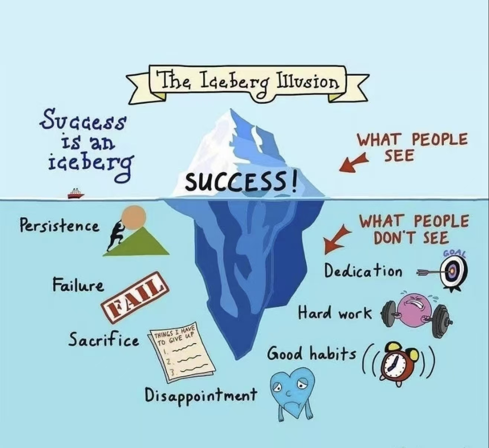

My Study Planner

About the App
My Study Planner is a web-based application designed to help students effectively organize and manage their academic responsibilities.
It helps students keep track of assignments, quizzes, and project deadlines in one central location, reducing stress and improving productivity.
Key Features:
- Create and manage study tasks easily.
- Set due dates and track progress.
- Clear and user-friendly interface.
About Me
Hello! I am a student currently studying Information Technology Systems.
My academic interests include web development, database management, and software engineering.
To manage my own study tasks, I usually use a combination of digital calendars and to-do lists to prioritize my weekly assignments.